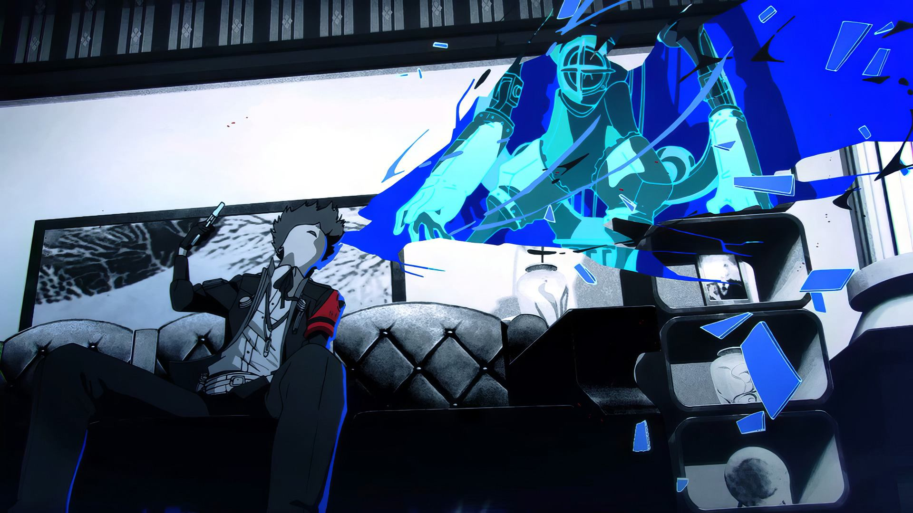
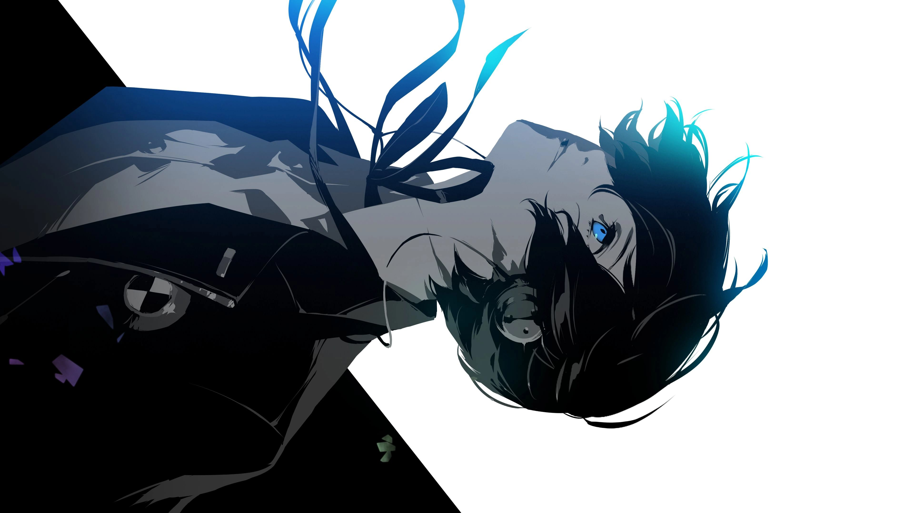
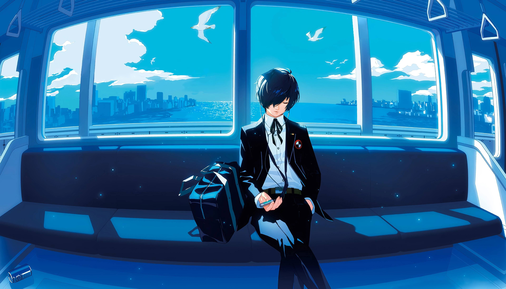

1st-year Computer Science student from Dhaka who lives on both sides of the hardware/software line — building oscilloscopes with Raspberry Pi, simulating CMOS circuits, coding in Python, and turning class theory into projects that actually run.
I am a motivated 1st-year Computer Science student with a strong interest in programming, electronics, hardware exploration, and problem-solving.
I enjoy understanding how things work from both the hardware and software side. My goal is not simply to learn technologies, but to experiment with them, build practical projects, make mistakes, understand why they happen, and improve the solution.
My current technical interests include embedded systems, digital logic, circuit simulation, Python, signal visualization, electronics, and VLSI. I particularly enjoy projects where programming interacts directly with physical hardware.
One of my main projects is a Raspberry Pi 5 based oscilloscope using an ADS1115 16-bit ADC. I worked with I²C communication, voltage acquisition, channel selection, and real-time waveform visualization using Python and Matplotlib.
I have also worked on CMOS inverter analysis using LTspice, where I studied the voltage transfer characteristic, switching behaviour, VOH, VOL, VIH, VIL, and noise margins. I experimented with PMOS and NMOS sizing to understand how transistor dimensions affect inverter behaviour.
In digital design, I implemented Mealy and Moore finite-state machines for binary sequence detection using Verilog. I created testbenches and used GTKWave to verify state transitions and outputs.
I have also explored Python image processing using OpenCV and Matplotlib, including image loading, RGB/BGR conversion, displaying images, rotation, translation, and scaling.
Some of the tools and technologies I have worked with include Python, C/C++, Verilog, 8051 Assembly, LTspice, GTKWave, Keil uVision 5, Magic, VS Code, OpenCV, NumPy, Matplotlib, Jupyter Notebook, Raspberry Pi 5, and ADS1115.
I consider problem-solving and persistence to be two of my strongest qualities. I like challenging technical problems because they force me to think differently and keep experimenting until I understand the solution.
I also value curiosity, independent learning, hands-on experimentation, teamwork, adaptability, and helping others whenever I can.
Outside academics, I have a wide range of interests. I enjoy programming and hardware exploration, but I also like gaming, especially challenging Souls-like and story-driven games. I enjoy going to the gym, swimming, cycling, running, and cooking.
“The important thing is not to stop questioning.”
— Albert Einstein
Right now, I am focused on strengthening my fundamentals in electronics, programming, embedded systems, digital systems, and practical engineering. I want to keep turning what I learn in class into projects that I can actually build, test, and improve.
I'm open to internships, research collaborations, and any project that mixes code with hardware. Drop me a message below and it goes straight to my inbox, or find me on any of these: